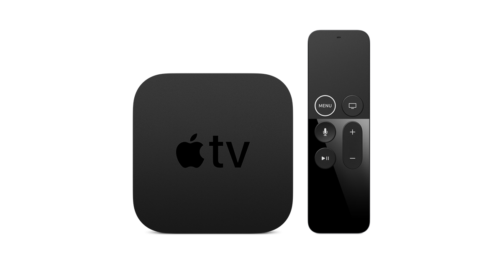

How to Cut the Cord With Free Over The Air TV
Cut the cord with an Apple TV, HDHomeRun, and over the air broadcasts. Why are you still paying for cable? We stopped paying them back in 2015 by combining free over the air TV with Netflix. Learn how we did it.

As I mentioned in my previous blog post on Part One - How to stop paying for your landline, most people pay between $100 and $250 each month to their cable providers. They are paying for Internet, Phone, and TV. My last post showed how you can save at least $20 per month by not paying your cable company for a phone line. Now for the bigger savings. Lets save some money on TV.
First, lets determine if this is for you. The below table will list what you should get, and what you may have to give up (or find other alternatives that I wont cover).
| Popular Over The Air Channels (HD) You Get | Popular Cable Only Channels You Wont Get |
|---|---|
| ABC | Fox News |
| NBC | MSNBC |
| FOX | HGTV |
| PBS | USA |
| ION | Discovery |
| CBS | Hallmark |
| CW | TBS |
| Univision | CNN |
| Telemondo | ESPN |
Depending on where you live, many of your local sports will also be shown Over The Air. In Atlanta, all NFL Falcon games are broadcast live on FOX on Sunday, and Thursday Night Football on CBS. SEC College Football is also broadcast on Saturdays. As a moderate sports fan (as in I watch when I can, but not live and die by football), this satisfies my needs.
Along with the live TV we watch, our second source for content is from Netflix. This will often cover some of the content (or similar content) that is shown by some of the cable networks (eg HGTV, Food Network, etc.). I also have two young kids who watch their kid shows on either Netflix, PBS, or YouTube. We also have Amazon Prime Video, but watch that less often as I am not sold on their content library just yet.
By the way, since we are aiming for free things here, did you know T-Mobile One gives you a free Netflix plan! Check with your providers to see what other free deals you may qualify for.
Also important to us was to have a single interface. I didnt want to have to deal with multiple remotes, different sources etc. With this approach, everything is available via my Apple TV.
Still interested? Then great. I have this set up running in my home, and at my parents. You dont have to be technically savvy to get this working, and anyone can operate it like their traditional cable set up. It meets the wife test and parent test!
SHOPPING LIST
Before getting started, you will need to buy the following items:

HDHomeRun Connect Duo (Around $90) |

TV Antenna (Around $25 - $50) |
|---|
|
 Apple TV 4K (Around $179) |

Channels App for Apple TV (Around $25) |
|---|
PART TWO - HOW TO STOP PAYING FOR CABLE TV

Network Setup
You will need an antenna to receive the free Over The Air TV signal from the broadcaster. There is a large variety of antenna’s you can get. If you have the ability to mount one inside your attic, or on your roof - you will get the best signal. The Mohu Leaf Antenna I linked to is also a great option for mounting discretely on your wall and getting a good signal. Make sure you antenna is positioned to get the best possible signals, else you may experience weakness on some channels. A guide to the direction of your local broadcast towers can be found here.
Helpful Tip: If you are in the process of building a new home, have the builder install a conduit from the attic to your network closet. That way you can install an antenna in the attic, and thread the coax cable down to the basement where your router and hdhomerun can live.
Once you have your antenna where you want it to be and pointing in the right direction, plug it into your new HDHomeRun. The role of the HDHomeRun is to take the analog Over The Air signal, and make it available to stream on your home network where your Apple TV will be able to see it. You will be connecting your antenna to the the coax input of your HDHomeRun. Then connect an ethernet cable from your HDHomeRun to your Internet Router.
Install the Channels App on your Apple TV (4th Generation or higher).
- Open the Channels App
- Go to Settings
- Choose to detect the HDHomeRun on your network
- It will now scan for the channels that your antenna is able to pick up.
- Once all the channels have been scanned, you can now heart your favorite channels that you watch.
Enjoy watching Free Over The Air TV using only your Apple TV with a channel guide similar to what you are used to.
I pick up 132 channels, many of which are in High Definition. However, theres only about 6 or so popular channels that we regularly watch (eg ABC, FOX, PBS, CBS, etc).

Channels App for Apple TV
If you have a Netflix, Amazon Prime, Hulu, or whatever your favorite streaming service is, then chances are there is an Apple TV app for that also and you can watch everything from just your Apple TV.
Channels also offers a DVR option with a monthly subscription fee if that is something you want. Alternatively, in a future post I will talk about setting up a PLEX server which can also connect with your HDHomeRun and record your favorite shows.
TOTAL COST: approximately $320 (one time)
Disclaimer: Occasionally I may post links for products that I use. I only recommend stuff that I have purchased and have in my home. If you buy the product by clicking on the link, I may earn a small commission from the sale at no extra cost to you.
comments powered by Disqus